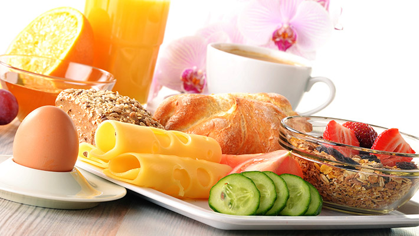

随着年龄的增长，生活节奏的加快，我们好像对自己的生活越来越焦躁。小时候，早餐的味道是妈妈的温暖；上学时，早餐的味道是食堂的亲切；可是当我们越来越大，更多地将时间选择在了睡觉而不是吃一顿早餐，也就渐渐忘记了早餐之味。
相比于午餐和晚餐，早餐是一天之中最温暖的一顿饭。因为早上，经过一夜的休息，胃里是空的，酸度也很高。而早餐则对胃液有稀释作用，促进肠胃的蠕动。而且，早餐可以补充营养，使身体尽量少地消耗蛋白质，也保证了皮肤的健康。同时，吃早餐也会使午餐的摄入量降低，降低脂肪的合成，也有助于不长胖。
早餐不用太过多，保证吃好就好。粥、麦片、鸡蛋、牛奶、面包等，这些食物应保证有主食、蛋白质和维生素，既能保证充足的营养也不会对肠胃造成太大的负担。
一顿温暖的早餐，带来一天的好状态，也带来一个更优秀的你。
任务详情：添加任务后，365日历会为您添加日程，每天提醒您吃早餐。您可以自己设置提醒时间。